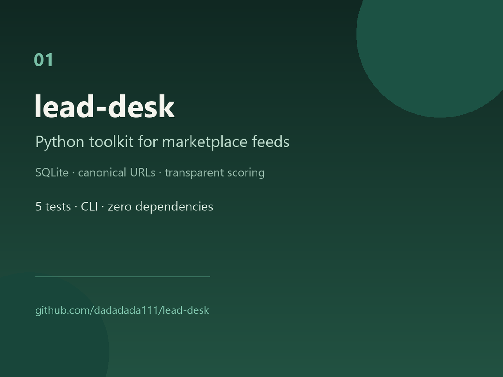
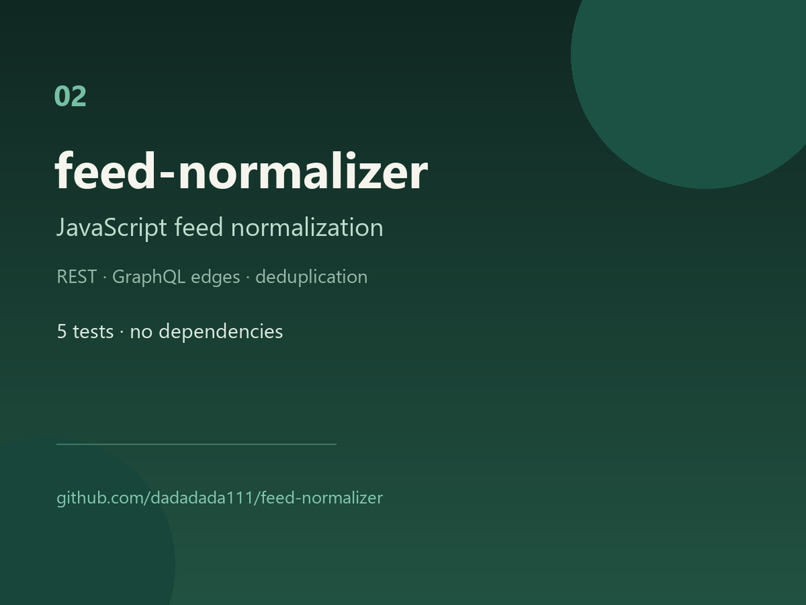
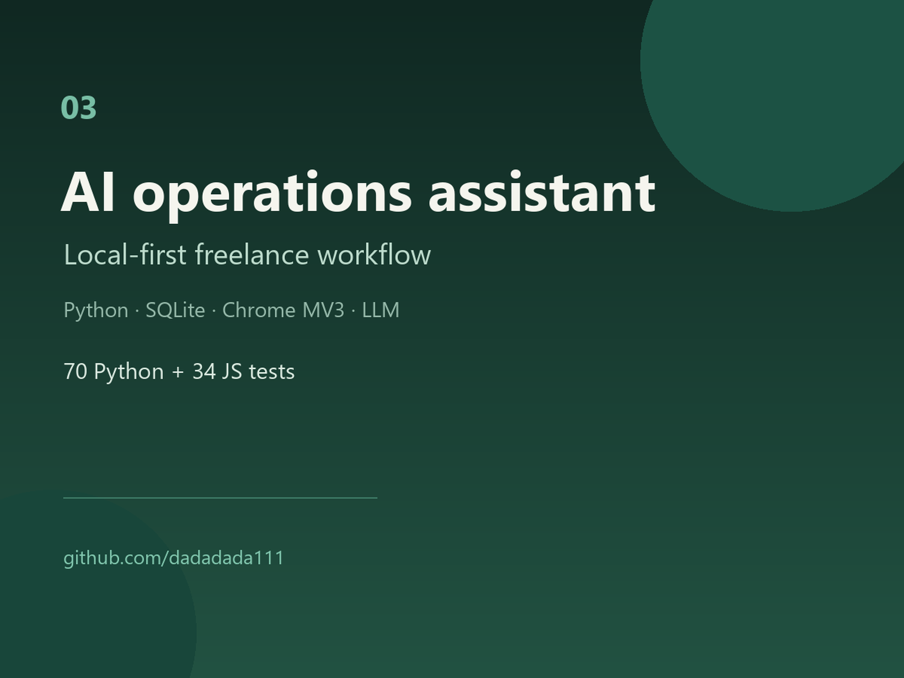
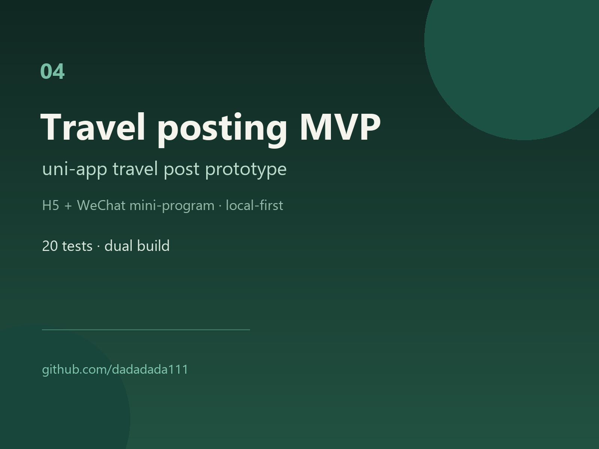

01lead-desk
A dependency-free toolkit that turns messy marketplace feeds into a deduplicated, scored lead list. Canonical URLs, transparent scoring and a small CLI — no scraping, no credentials.
Independent developer · China (UTC+8) · Remote worldwide
AI Automation & Web Product Developer. I turn manual workflows and rough ideas into working web products — then document the handover.
01 — Selected work
Four self-initiated projects that show the range: data tooling, a parsing library, an AI-assisted operations desk and a local-first mini-program.

01A dependency-free toolkit that turns messy marketplace feeds into a deduplicated, scored lead list. Canonical URLs, transparent scoring and a small CLI — no scraping, no credentials.

02One normalization boundary for REST arrays, {items: []} payloads and GraphQL edges[].node. Zero dependencies, Node test runner, predictable output.

03A local-first workflow that imports marketplace tasks, scores fit, drafts English outreach and keeps an audit trail. Deliberately no auto-send and no cookie collection.

04A local-first prototype shipping to H5 and WeChat mini-program from one codebase: create, browse, search, favourites and corruption-safe local storage. Both builds passing; production auth and cloud sync intentionally out of scope.
02 — About
I build practical web apps and AI automations: scoped MVPs, API integrations, internal tools and the technical copy that makes them easy to hand over.
I work in short, clear engagements — define the outcome and acceptance criteria, build the smallest reliable version, test the critical paths, then document and hand over. I communicate in English and keep scope, timeline and trade-offs explicit.
Based in China (UTC+8), working remotely with US/EU clients.
03 — Process
Outcome, constraints, acceptance criteria and the one thing that must work.
The smallest reliable version — working software before polish.
Critical paths, edge cases and the limits I will not hide.
Code, runbook, open questions and a clean next step.
04 — Contact
Send the outcome, the constraints and the deadline. I will reply with a scoped next step — not a 40-page proposal.